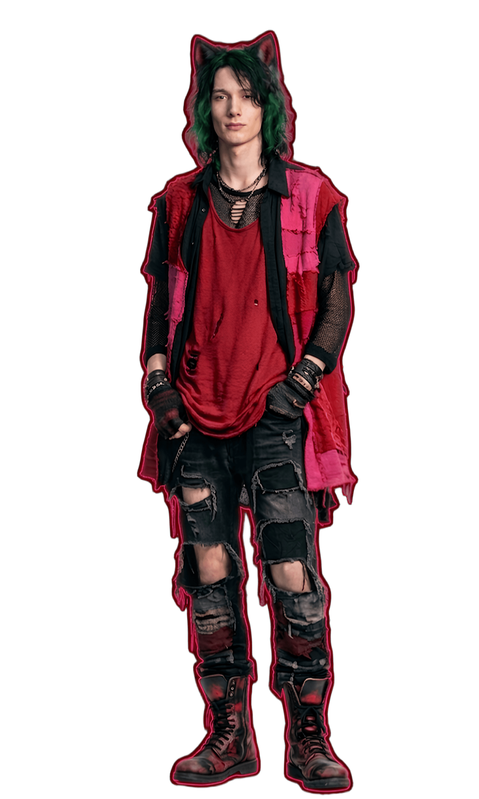

История
Ну а теперь история, как же я докатился до жизни такой...
Герой нулей и единиц
Прежде чем погрузиться в лор нам нужно познакомиться с нашим героем...

Вот и наш герой, сейчас вы познакомимся с ним подробнее.
Интеллектуал-одиночка с феноменальной памятью и сложной внутренней архитектурой. Человек, который научился контролировать свой гнев раньше, чем начал доверять людям. Его принципиальность — это не каприз, а фундамент, на котором он строит свою жизнь в мире, который кажется ему неизбежно временным.
А сейчас узнаем насколько вы похожи на него
Decsim живет в мире, который сильно отличается от нашего. Это мир, где технологии везде и повсюду, если мы живем с технологиями, то они живут в них. В этом мире граница между реальностью и цифровой иллюзией давно стерта. Человечество достигло технологии переноса сознания в искусственную среду. Изначально это задумывалось как шаг к бессмертию, способ сохранить разум и пережить физические ограничения тела. Но технология оказалась в руках тех, кто увидел в ней не спасение, а источник власти. Людей начали насильно переносить в цифровые симуляции — идеальные, но фальшивые миры, где сознание застревает, не подозревая о своей истинной судьбе. Их физические тела остаются в реальности, заключенные в капсулы, подключенные к системам, извлекающим жизненную энергию. Эта энергия используется для продления жизни и усиления влияния тех, кто контролирует систему. Сама симуляция нестабильна. Она трескается, искажается, подчиняется ошибкам. Города распадаются на фрагменты кода, пространство ведёт себя нелогично, а законы реальности нарушаются. Иногда сквозь эти сбои можно увидеть правду — холодную инфраструктуру, скрытую за иллюзией. Мир наполняют цифровые артефакты: зависшие в воздухе символы, потоки данных, искажения пространства. Внутри симуляции можно заметить силуэты людей, запертых в прозрачных структурах, словно в клетках из света и информации. Это не просто виртуальная среда. Это тюрьма, замаскированная под реальность. Те, кто понимает, что происходит, называют это системой обмана — местом, где сознание живёт, но не принадлежит себе. И чем глубже человек погружается в этот мир, тем сложнее отличить правду от иллюзии.


Сейчас тут будут вопросы и варианты ответов, после его прохождения мы посмотрим, насколько вы похожи на нашего героя
Перед этим нужно прочитать историю